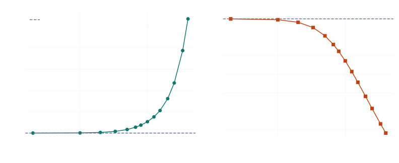
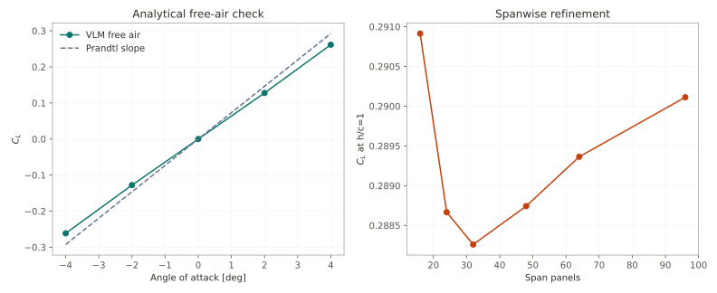
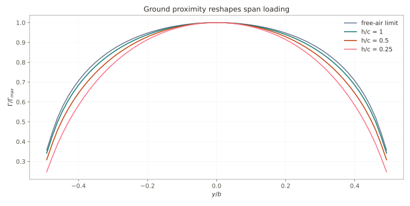

Ground-effect sensitivity of a finite wing
One-row horseshoe-vortex model · AR 4 rectangular wing · 64 span panels · fixed incidence 4°
Question
How does proximity to a moving ground plane alter circulation, lift, and induced-drag cost, and which checks are necessary before trusting that trend?
Method
A rectangular wing is represented by finite horseshoe vortices. Bound segments lie on the quarter-chord; collocation points lie on the three-quarter-chord. Every vortex is mirrored below the ground plane with reversed circulation, enforcing zero ground-normal velocity. The wake extends 80 chords.
The sweep covers quarter-chord heights 0.25 ≤ h/c ≤ 50. This is linear, incompressible, inviscid potential flow: no thickness, viscosity, separation, moving-road boundary layer, tyres, floor, diffuser, or body blockage.

Verification
| Gate | Observed | Threshold | Result |
|---|---|---|---|
| Ground-plane normal-velocity residual | 0.0e+00 | < 1e-12 | PASS |
| h/c=50 vs free-air lift difference | 0.0033% | < 0.1% | PASS |
| Free-air lift-slope error vs Prandtl | 11.01% | < 12% | PASS |
| Lift change, 64 to 96 panels | 0.258% | < 1% | PASS |
| Spanwise circulation symmetry error | 1.94e-16 | < 1e-12 | PASS |

Result and interpretation
Free air gives CL=0.2615, CDᵢ=0.00549, and e=0.990. At h/c=0.5, fixed-incidence lift rises to CL=0.3461. Absolute induced drag remains similar, while CDᵢ/CL² falls 41.9%. The defensible mechanism claim is lower downwash cost for required lift—not guaranteed absolute drag reduction at fixed incidence.
At h/c=0.25 the linear model predicts more than twice free-air lift. That is a limitation signal. Real low-clearance performance depends on viscous pressure recovery, separation, leakage, pitch, wheel wakes, body geometry, and ground boundary layers absent here.

Decision value
- Check sign and scale before higher-fidelity work.
- Separate image-vortex effects from viscous and geometric effects.
- Exercise ride-height normalisation, convergence, and evidence discipline.
- Provide an auditable baseline that a panel or RANS model must improve upon.
Not suitable for ranking race-car floors, predicting stall, resolving diffuser separation, or reporting absolute vehicle coefficients.